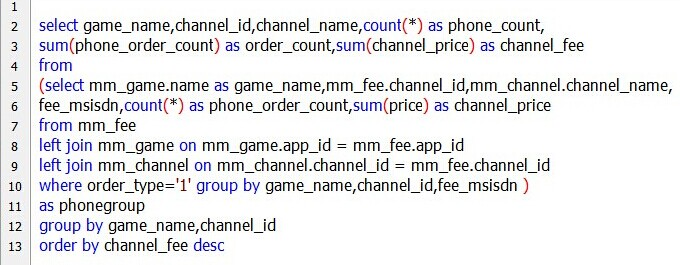

看完电影回来才发现，12306晚上不能订票的，麻烦了，返程票还没买呢。(9-30)
看电影前，在太阳城下面的李宁，买了双鞋258，一件T恤，50。(9-30)
今晚电影，心花路放。明天火车，一路北上。(9-30)
与北京一个公司的电信扣费同步，顺利完成了。很快就看到很多扣费，有点欣喜。(9-30)
加班出来后，走去1200bookshop，环境很好，座椅沙发蛮多的。
墙上有个地方凸起两根小铁丝，我用钥匙把它们压下去了。(9-29)
一边做咪咕包月的扣费测试，一边做电信扣费的同步方案。后面，还有一堆事情等着。忙额。(9-29)
下班后在公司看了下比赛，越秀山，广州德比。很精彩，雷内绝杀。
恒大今年不流行最低消费，流行绝杀了。(9-28)
跑来加班写了个周报，测试了会游戏。
然后去北京路看了个《触不可及》，这片蛮好的嘛，网上评分却很低。
走去文明路中山图书馆转了下，原来不用办证可以直接进的，真是个好地方也。
在里面转了会，出来附近吃了个牛三星，一家开了20多年的老店，赞！(9-27)
周五，晚上公司打球，就只有我和另外个同事。幸好又分别拉了个外援，四个人打的还挺过瘾的(9-26)
写了个近几年来最长的sql语句，直接一句就得到统计结果咯。(9-25)

中午吃饭的时候，老板说了句，工作再难做，按部就班就是了。对，按部就班。(9-24)
上午做了个网页上短信包月订购的流程图。下午处理了下微信公众号的问题。
给公众号做了个微信认证，然后昵称就改成公司简称了，，NND。。
另外，今天第一次上12306买了张火车票。(9-24)
完善了官网的游戏分享功能，百度分享js好顺手额。(9-23)
一直不明白移动的游戏基地为啥叫“和游戏”，直到那天在路上看到这个logo。(9-23)
下班后去了趟广商，借了两本书。四个月没回来了，二食堂都变样了。(9-22)
昨晚喝的有点多，睡的又太少，今天一天都头痛不舒服，在家宅了一天。
看了两部电影《致命ID》、《金蝉脱壳》，前者还不错，后者太一般了。(9-21)
今天周六，上半场，恒宝广场吃了九毛九，西城都会看了《空中营救》，好片。
下半场，去打了科新，吃了方记，唱了荷棠月色。比较开心的一天。(9-20)
申请了下公众号的微信认证。然后新域名的备案又没通过初审，折腾额。 (9-19)
今天周四。通过在html头部添加meta name="viewport" 标签，使得网页内容在手机端可以良好显示了。 (9-18)
解决了两个问题：
1，web页面自适应屏幕，根据分辨率使用不同css即可。
2，微信公众号中通过原文链接，进入到官网，再通过浏览器打开来下载游戏包。(9-17)
下班后去客村好又多，买了一个长袖衬衫129，一条真维斯牛仔裤180。(9-17)
晚上去吃了个烤鱼，60块钱，八分饱。(9-16)
上午去问了下居住证的事情，原来以前的居住证直接改下就可以，我还笨的先去拍了照，浪费了25快钱。。(9-15)
去了越秀公园、中山纪念堂。晚上看了广州富力对上海绿地申花 ，4比0。(9-14)
拿到了家里寄过来的月饼。。。现在等着看恒大 (9-13)
今天又感冒了，，真是需要锻炼身体了。晚上看了个动画片-《新地雷战：神勇小子》，越来越喜欢动画片了 (9-12)
域名备案终于通过了，下班后忙活到10点，把网站页面又修改了很多，然后配置上线了。。。 (9-11)
完成了公司平台公众号，最终还是选了编辑模式。。。 (9-10)
去了个陈家祠，第六次去了。。。 (9-8)
去乐嘉广场朋友家吃饭，又喝了个糊里糊涂。。。 (9-7)
下载到了2000万条的开房数据，需要用sqlserver数据库来打开。先装了SqlServer2008，提示版本不够，
继续下载了2012版本，提示说操作系统不满足安装条件，，再下载了2008R2版本，终于搞定了。。。呵呵，。 (9-6)
星期五，明天就是中秋假期了。对于别人来说，是中秋佳节，对于我来说只是个，中秋假期。。 (9-5)
看了打印的十页《小白学运营》，受益匪浅，什么联运、独代、首发什么的，一下有个认识了。。(9-4)
正式转运营。学习学习，如何做个好运营，如何运营游戏产品。一手技术，一手运营，这才是复合型人才嘛 (9-3)
和两个同事去看了《敢死队3》，感觉比2好看一点。原来华夏银行的卡每天第一笔取钱是不收跨行费的。
正在上班，今天突然想起梧州了。想去的地方太多了。。 (9-2)
九月伊始。。。 (9-1)